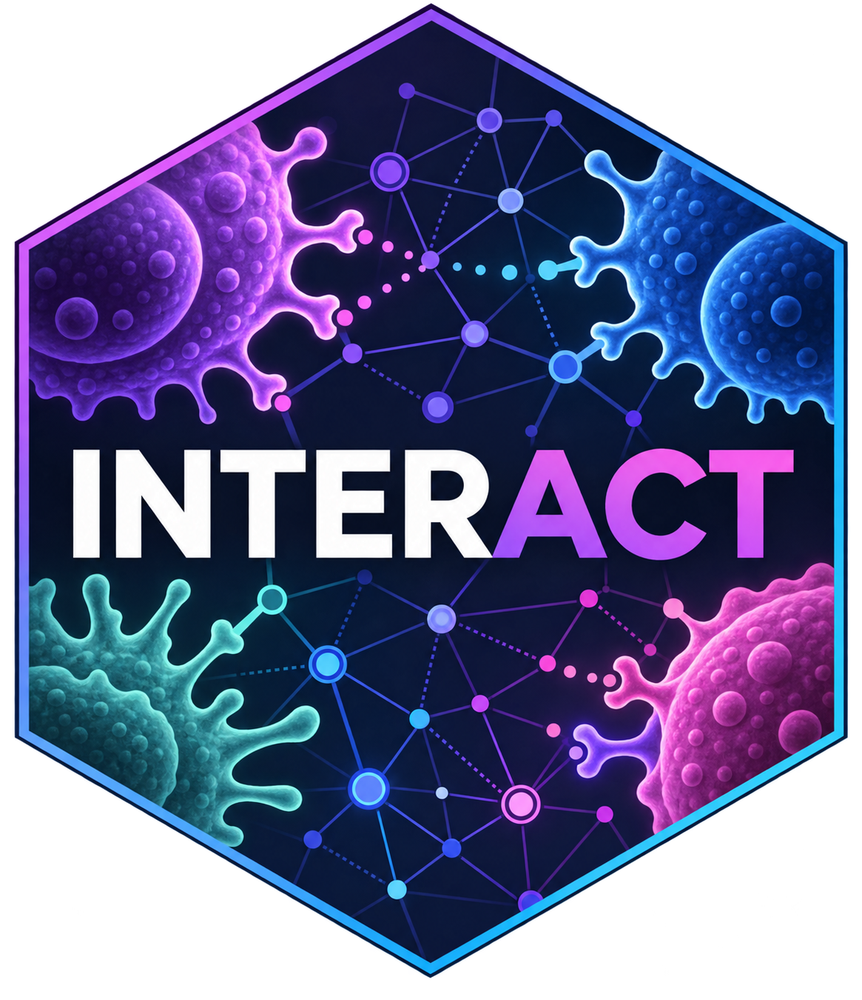

Plot an INTERACT iGraph for a Single Sample
PlotGGraph.RdTakes an igraph object generated by BuildGraph()
and renders a static network graph using iGraph
Usage
PlotGGraph(
graph,
interactions = NULL,
highlight.cell = NULL,
highlight.gene = NULL,
highlight.color = "#DC0000FF",
top.n = NULL
)Arguments
- graph
A directed
igraphobject generated byBuildGraph().- interactions
Optional. The full interactions data frame from RunINTERACT. Required only if performing gene-level highlighting.
- highlight.cell
Optional. Character string of a cell type to highlight.
- highlight.gene
Optional. Character string of a ligand or receptor gene symbol to highlight.
- highlight.color
Character. Hex code or color name for highlighted elements. Default is red.
- top.n
Optional integer. Number of top population-level edges to display.